ONLINE COURSE / DX · AX / 2026
업무를 이해하고,
AI로 연결하는 방법
DX·AX 실증 전문가 과정
업무 분석에서 문서·데이터·자동화·AI 에이전트 운영까지
고려대학교 세종산학협력단 · 온라인 교육
생성형 AI 기반 DX·AX 실무 활용 교육
개인과 조직의 업무를 디지털 데이터로 정리하고, 생성형 AI를 문서·분석·협업·자동화에 적용하는 방법을 배운 과정입니다. 온라인 강의를 중심으로 개념 설명과 도구 시연, 따라 해 보는 예제를 연결했습니다.
- 운영기관
- 고려대 세종산학협력단
- 교육 방식
- 전체 온라인 · 강의·시연 중심
별도의 팀 프로젝트 없음 - 교육 기간·편성
- 2026.04.06–05.06
사업 문서 기준 160시간 - 교육의 초점
- 업무 문제 정의 · AI 활용 설계
데이터·도구 연결과 운영 관점
“어떤 AI를 쓸까?”에 앞서 “어떤 업무를 바꿀까?”를 묻는 수업이었다. 업무의 병목을 찾는 데서 출발해, 자료를 정리하고 도구를 연결하며 사람이 검토할 지점을 설계하는 흐름으로 확장했다.
01 / 업무 분석과 DX·AX 기초
업무를 분석하고 AI 적용 지점 찾기
04.06–04.10 · 온라인 수업 기록
첫 단계는 새로운 도구를 고르는 일이 아니라 현재 업무를 설명하는 일이었다. 자료가 어디에 있고, 어떤 순서로 처리하며, 어느 지점에서 시간이 오래 걸리는지 정리했다. 디지털 전환으로 업무와 데이터를 구조화하고 그 위에 AI 활용을 설계하는 관점을 다뤘다.
4월 7일에는 업무 흐름 가시화와 비효율 수치화, 업무 분석 보고서 구성을 다뤘다. 이어 업무를 실행 가능한 단위로 나누고 적용 가치와 난이도를 판단하는 기준, 문제를 명확한 프롬프트와 데이터 질문으로 바꾸는 방법으로 연결했다.
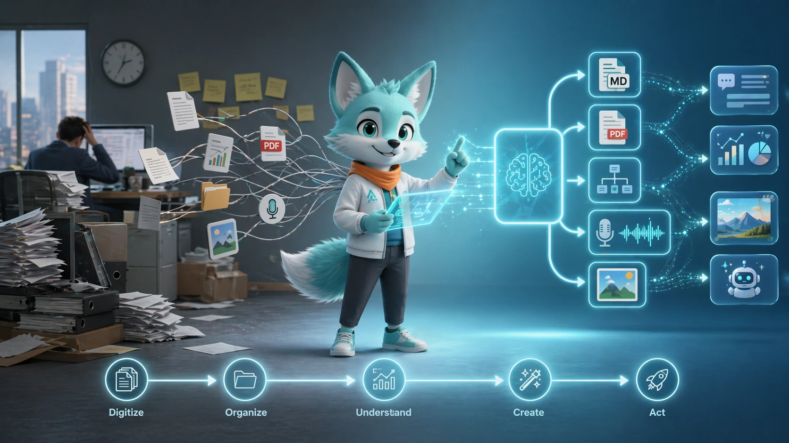
그림 크게 보기 ↗DX 위에 AX를 올리는 첫걸음
업무를 디지털 데이터와 문서로 정리한 뒤 AI가 도울 지점을 찾았다. 생성형 AI의 기본 원리와 한계를 살펴보고, Markdown·PDF·Mermaid로 답변을 업무 문서와 도식으로 바꾸는 흐름을 소개했다.
{kind=link}
병목·지연·중복·반복을 구분하기
업무 흐름에서 비효율이 생기는 위치를 찾고 개선 대상을 구체화했다. 규칙에 따른 자동화와 문맥을 읽는 AI 활용을 비교하고, 로컬 파일·폴더와 연결된 도구의 작업 방식을 시연했다.
{kind=link}
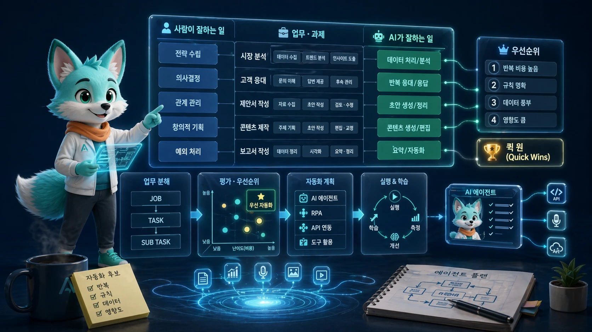
그림 크게 보기 ↗AI 적용 대상과 우선순위 판단
업무를 Job·Task·Sub-task로 나누고 규칙·판단, 데이터·관계라는 축으로 분류했다. 반복성·가치·난이도·시급성을 함께 보며 먼저 적용할 업무를 고르는 기준을 익혔다.
{kind=link}
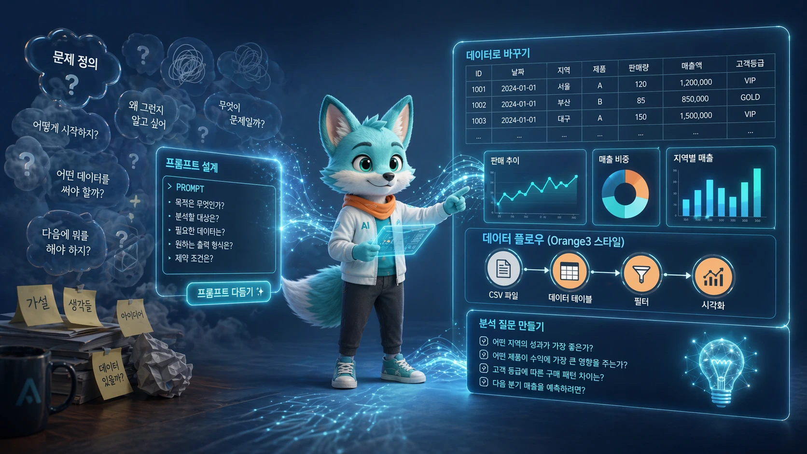
그림 크게 보기 ↗문제 정의를 프롬프트와 데이터 질문으로
배경·목적·절차·제약·출력 형식을 명시하는 프롬프트를 다뤘다. Orange3와 예제 데이터로 샘플링·특성·학습·검증·시각화의 흐름을 살펴보며 데이터 분석의 기본 언어를 익혔다.
{kind=link}
02 / 문서·분석·지식 관리
문서·데이터를 실무 지식으로 바꾸기
04.13–04.17 · 온라인 수업 기록
두 번째 단계에서는 조사 자료와 회의 기록, 표 데이터를 업무에 필요한 결과로 정리하는 흐름을 다뤘다. 독자와 목적을 정한 문서 초안, 근거를 확인하는 검수, 그래프와 해석이 연결된 보고서가 주요 강의 예제였다.
한 번 만든 결과를 다음 업무에서 다시 쓸 수 있도록 Markdown·위키·메모리 구조도 살펴봤다. 데이터를 잘 정리하는 일과 AI에 충분한 맥락을 전달하는 일이 연결된다는 점을 강조했다.
자료에서 회의록·보고서·발표자료로
NotebookLM과 회의 녹취 사례를 통해 같은 자료를 목적에 맞는 여러 형식으로 정리하는 방법을 설명했다. 회의록의 독자·목적·필요 항목을 정하고 액션 아이템을 추출하는 요청 설계를 다뤘다.
{kind=link}
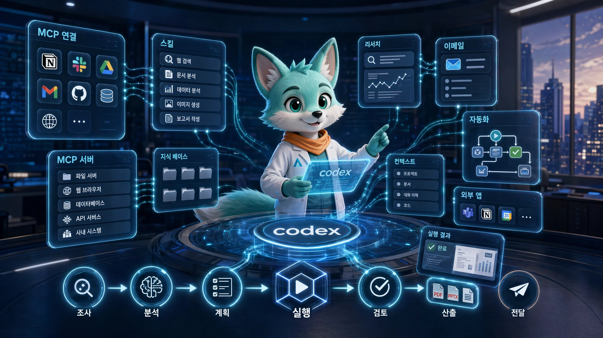
그림 크게 보기 ↗조사·도구 실행·검수를 연결하기
배경조사에서 문서 초안과 검토로 이어지는 업무 흐름을 살펴봤다. Codex의 도구 호출, MCP·스킬·서비스 연동과 주기 작업을 시연하며 긴 문서를 조사→초안→검수→재작성으로 나누는 방식을 소개했다.
{kind=link}
요약을 재사용 가능한 지식으로
좋은 요약은 짧게 줄이는 것만이 아니라 독자·목적·형식을 정하는 일임을 다뤘다. 문서·웹·회의 음성을 텍스트로 정리하고, Whisper 계열 음성 인식과 LLM 위키로 지식을 축적하는 구조를 설명했다.
{kind=link}
데이터를 읽고 인사이트로 설명하기
정형·반정형·비정형 데이터와 데이터 리터러시를 살펴봤다. CSV·Excel에서 질문을 만들고 그래프·해석·검증을 거쳐 원페이지 보고서로 정리하는 강의 예제를 다뤘다.
{kind=link}
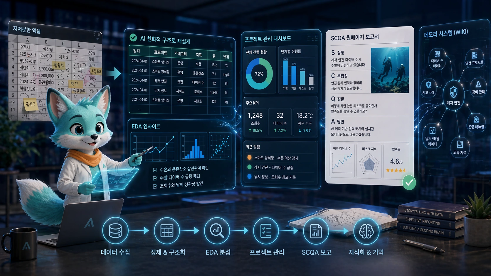
그림 크게 보기 ↗Excel 구조화와 보고서·메모리 설계
AI가 읽기 좋은 표 구조와 탐색적 데이터 분석 질문을 정리했다. 분석 결과를 상황·문제·질문·답변의 SCQA 보고서로 연결하고, Obsidian·LLM 위키로 다음 업무에 재사용하는 방법을 설명했다.
{kind=link}
03 / 자동화·협업·콘텐츠
반복 업무를 협업 워크플로우로 연결하기
04.20–04.24 · 온라인 수업 기록
세 번째 단계에서는 입력과 처리, 조건 분기와 결과 전달을 하나의 흐름으로 읽었다. n8n의 화면을 통해 노드 사이에 어떤 데이터가 전달되는지 확인하고, JSON·API·실행 로그가 자동화를 이해하는 기본 도구임을 설명했다.
개인이 편해지는 자동화를 넘어 팀이 같은 데이터와 판단 기준을 공유하는 협업 구조를 다뤘다. 이미지 생성도 발표와 커뮤니케이션을 위한 콘텐츠 제작 과정으로 연결하고, 사람이 결과를 확인할 지점을 함께 정리했다.
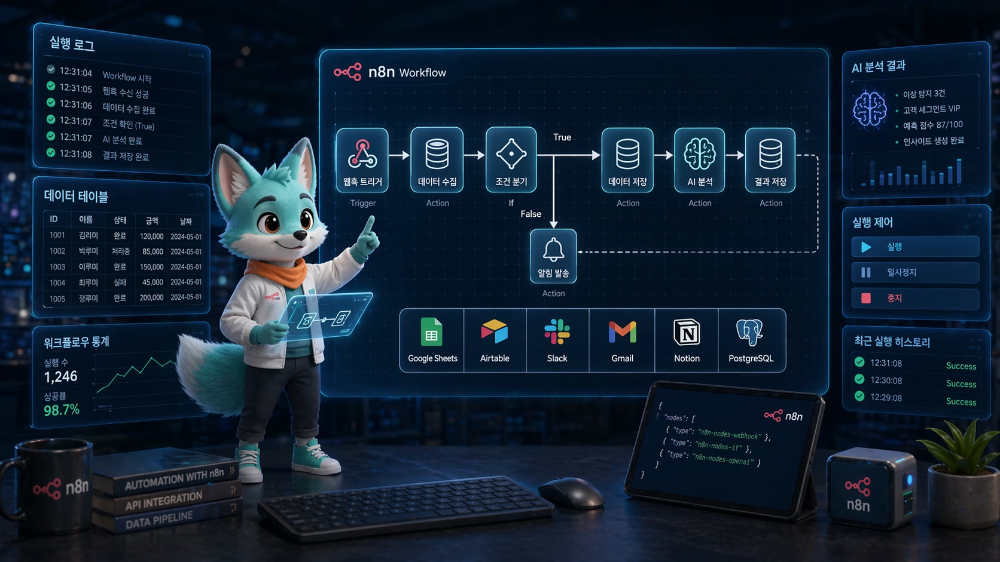
그림 크게 보기 ↗n8n으로 업무 흐름을 눈에 보이게
Trigger·Action·Condition으로 자동화를 나누고 데이터 저장소·워크플로우 엔진·AI의 역할을 구분했다. 데이터 테이블, Google Sheets 연동, 실행 로그와 템플릿을 강의 화면에서 살펴봤다.
{kind=link}
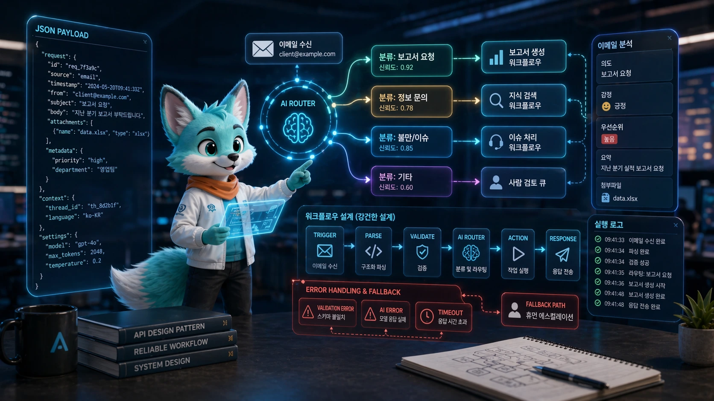
그림 크게 보기 ↗JSON과 AI 라우터로 다음 단계 결정
자동화 노드 사이에 오가는 JSON의 키·값과 데이터 구조를 읽었다. 이메일 분류와 AI 라우터 예제로 조건 분기·예외 처리·실행 로그를 설명하고, 흐름을 문서화해 점검하는 방법을 다뤘다.
{kind=link}
개인 자동화에서 협업형 AX로
팀이 같은 문맥·데이터·업무 규칙을 공유하는 협업 구조를 살펴봤다. 모호한 요청을 공통 기준으로 분류하고 문서·메시지·데이터베이스를 다음 행동으로 연결하는 관점에 집중했다.
{kind=link}
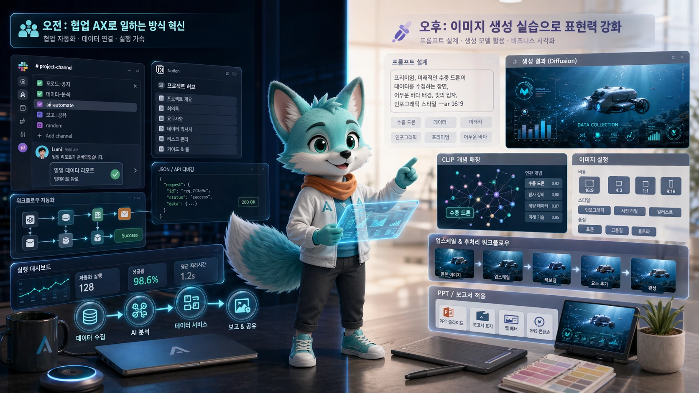
그림 크게 보기 ↗협업 운영과 이미지 생성의 기초
오전에는 협업 도구, 메모리·행동지침과 API 메시지 연동을 다뤘다. 오후에는 이미지 생성 원리와 프롬프트·비율·해상도를 설명하고, 발표용 인포그래픽과 일관된 마스코트 시리즈 제작을 시연했다.
{kind=link}
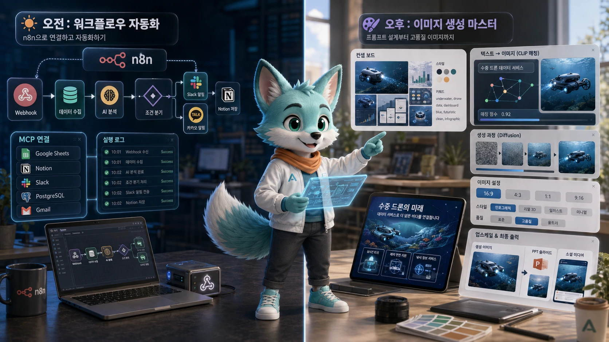
그림 크게 보기 ↗워크플로우에 생성형 콘텐츠 연결
n8n의 트리거·실행 구조를 복습하고 웹훅·알림·이미지 생성 API를 업무 흐름에 연결하는 예를 살펴봤다. 이미지 제작과 함께 인증·권한·로그를 확인하는 운영 관점도 정리했다.
{kind=link}
04 / 미디어·도구 연결·에이전트
멀티모달과 AI 에이전트 운영으로 확장하기
04.27–05.06 · 온라인 수업 기록
마지막 단계에서는 정적 이미지에서 영상으로, 답변 생성에서 도구 실행으로 범위를 넓혔다. MCP로 외부 기능을 연결하는 원리를 살펴본 뒤, 코딩 에이전트와 로컬 LLM, 역할을 나눈 여러 에이전트의 동작 방식을 비교했다.
Dify·CrewAI 강의 예제에서는 문서 검색 품질, 역할과 입출력, 다음 작업으로 넘길 결과의 형식을 확인했다. 과정의 마무리는 별도의 팀 프로젝트 발표가 아니라, 배운 도구를 어떤 업무 구조에 적용할지 종합하는 온라인 강의였다.
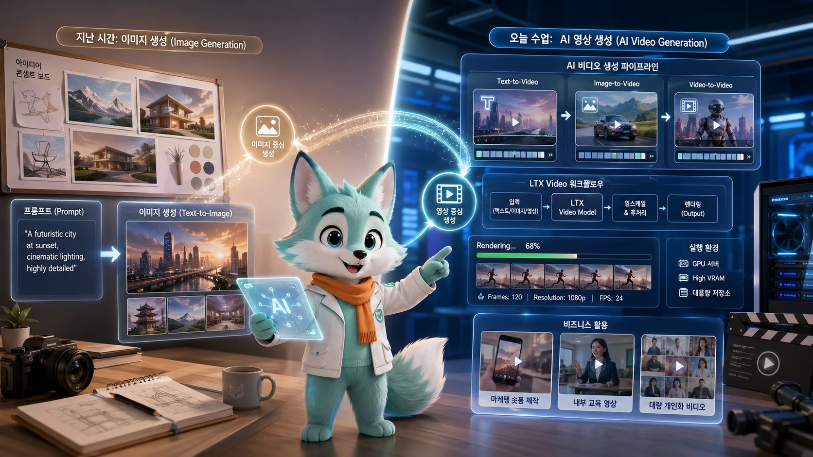
그림 크게 보기 ↗이미지에서 움직이는 미디어로
이미지 생성 복습을 바탕으로 text-to-video·image-to-video·video-to-video의 차이를 설명했다. ComfyUI와 영상 생성 워크플로우를 보며 로컬·클라우드 환경과 제작 흐름을 비교했다.
{kind=link}
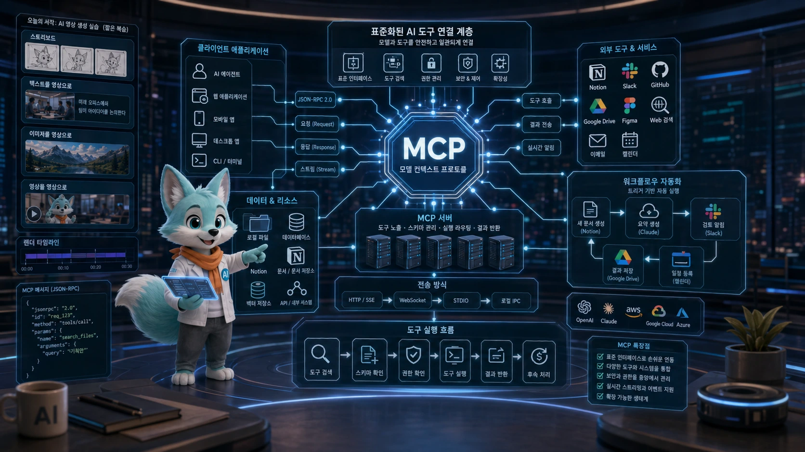
그림 크게 보기 ↗MCP로 AI와 업무 도구 연결
클라이언트·서버·도구·데이터 소스의 역할과 JSON-RPC 기반 호출 구조를 살펴봤다. 실행 명령·인자·환경 설정을 읽고, 필요한 기능을 찾아 호출하는 도구 연결의 기본 원리를 다뤘다.
{kind=link}
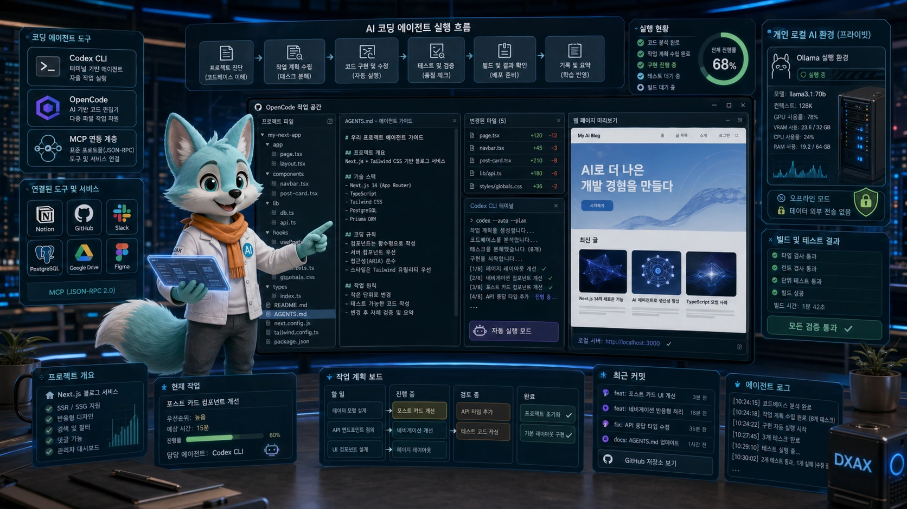
그림 크게 보기 ↗코딩 에이전트의 작업 환경 이해
Codex CLI·OpenCode와 로컬 LLM 환경을 강의 예제로 비교했다. AGENTS.md로 작업 맥락과 규칙을 전달하고, 계획과 실행을 나누어 문서를 참고한 웹 화면 생성 과정을 시연했다.
{kind=link}
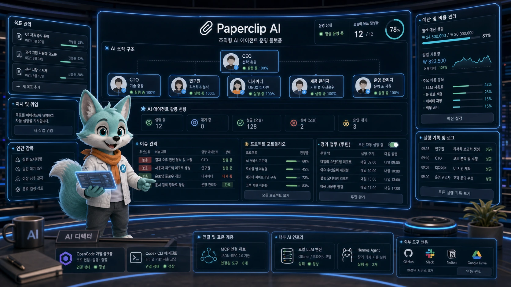
그림 크게 보기 ↗여러 에이전트를 역할과 목표로 운영
Paperclip AI로 역할·이슈·목표·실행 기록을 관리하는 구조를 소개했다. 정해진 순서의 n8n 워크플로우와 상황에 따라 판단하는 에이전트를 비교하며 비용·권한·검토 지점을 함께 생각했다.
{kind=link}
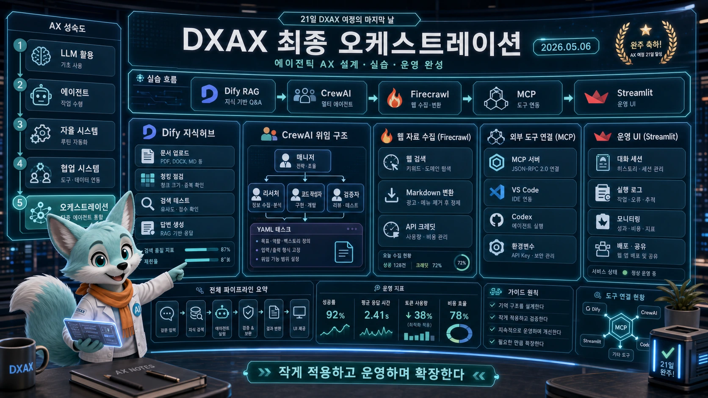
그림 크게 보기 ↗RAG와 멀티 에이전트 흐름 종합
Dify의 문서 검색·질의응답과 CrewAI의 역할·태스크·출력 설계를 살펴봤다. 청킹·검색 결과 검증, Firecrawl의 웹 자료 수집과 Streamlit 화면 연결을 통해 전체 학습 내용을 종합했다.
{kind=link}
LEARNING THROUGH THE COURSE
AI 활용을 업무 설계의 언어로
수업을 관통한 질문은 어떤 모델이 가장 좋은지가 아니라, 입력 자료를 어떻게 정리하고 결과를 어떤 기준으로 검토할 것인가였다. 업무를 나누고, 데이터와 문서를 구조화하고, 반복 흐름을 연결하고, 에이전트의 역할을 정의하는 관점을 단계적으로 살펴봤다.